Để thoát ra khỏi một vùng xa lạ hoang vu, để đến đúng điểm đã định trước…. các bạn nhất thiết phải tìm ra phương hướng.
Trong thực tế, có nhiều người vì không định hướng được, nên đã đi quanh quẩn mãi trong một vùng, và đôi khi trớ trêu thay, lại quay về đúng nơi khởi điểm.
CÁC PHƯƠNG HƯỚNG
Nhìn vào hoa gió dưới đây chúng ta thấy có 4 hướng chính là:
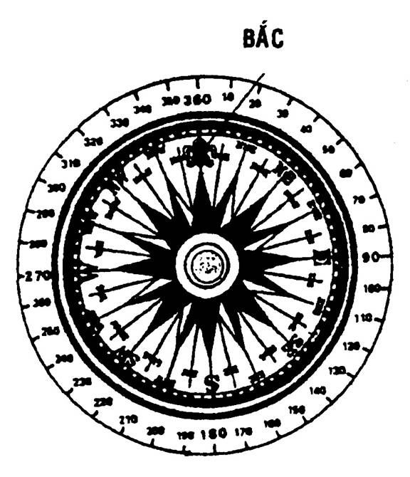
1. Đông hay East viết tắt E.
2. Tây hay West viết tắt W.
3. Nam hay South viết tắt S.
4. Bắc hay North viết tắt N.
(Người ta còn dùng HOA BÁCH HỢP để chỉ hướng Bắc thay cho chữ N).
Bốn hướng phụ là:
1. Đông Bắc – Viết tắt là NE.
2. Đông Nam – Viết tắt là SE.
3. Tây Bắc – Viết tắt là NW.
4. Tây Nam – Viết tắt là SW.
Ngoài ra chúng ta còn có 8 hướng bàng là:
1. Bắc Đông Bắc (NNE)
2. Đông Đông Bắc (ENE)
3. Đông Đông Nam (ESE)
4. Nam Đông Nam (SSE)
5. Nam Tây Nam (SSW)
6. Tây Tây Nam (SWW)
7. Tây Tây Bắc (WSW)
8. Bắc Tây Bắc (NNW).
Như vậy, chúng ta có 4 hướng chính – 4 hướng phụ và 8 hướng bàng ( và 16 hướng phụ thật nhỏ ).
CÁC CÁCH TÌM PHƯƠNG HƯỚNG.
Có nhiều cách để tìm phương hướng. Sau đây là những cách thông thường, dễ sử dụng.
1. Bằng mặt trời:
Đây là cách giản dị nhất mà ai cũng biết, nhất là ở những vùng nhiệt đới, nắng nhiều.
Buổi sáng, mặt trời mọc ở hướng Đông và buổi chiều lặn ở hướng Tây. Nếu các bạn đứng dang thẳng hai tay, tay mặt chỉ hướng Đông, tay trái chỉ hướng Tây, thì trước mắt là hướng Bắc, sau lưng là hướng Nam.
Nhưng các bạn cần lưu ý là buổi trưa, mặt trời hơi chếch về hướng Nam. Như thế thì khoảng 9 – 10 giờ sáng, mặt trời ở hướng Đông Nam. Khoảng 15 – 16 giờ chiều thì ở hướng Tây Nam.
2. Bằng đồng hồ và mặt trời:
a) Bắc bán cầu:
Dùng một que nhỏ (cỡ cây tăm), cắm thẳng góc với mặt đất, que sẽ cho ta một cái bóng. Ta đặt đồng hồ sao cho bóng của cây tăm trùng lên kim chỉ giờ.
Đường phân giác của góc hợp bởi kim chỉ giờ và số 12 cho ta hướng Nam, như vậy đối diện là hướng Bắc.
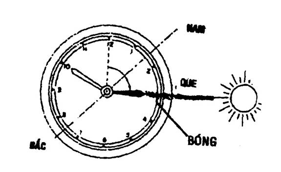
b) Nam bán cầu:
Các bạn xoay đồng hồ sao cho bóng que trùng lên trên số 12. Đường phân giác của góc hợp bởi số 12 và kim chỉ giờ sẽ cho ta hướng Bắc. Như vậy, hướng đối diện là hướng Nam.
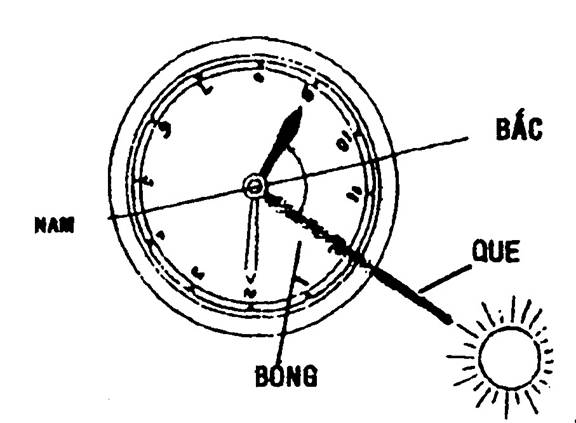
3. Bằng gậy và mặt trời.
Phương pháp 1:
Còn gọi là phương pháp Owendoff. Dùng một cây gậy thẳng dài khoảng 90 cm, cắm thẳng góc với mặt đất. Ta ghi dấu đầu bóng của gậy, lần thứ nhất gọi là điểm A.
Sau đó khoảng 15 phút, bóng gậy sẽ di chuyển qua chỗ khác, ta lại đánh dấu bóng của đầu gậy thứ hai, gọi là điểm B. Nối điểm A và B lại, ta có một đường thẳng chỉ hướng Đông Tây (điểm A chỉ hướng Tây, còn điểm B chỉ hướng Đông). Và dĩ nhiên hướng Nam Bắc thì thẳng góc với hướng Đông Tây.
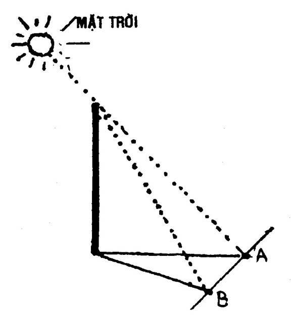
Phương pháp 2:
Phương pháp nầy lâu hơn phương pháp 1 chừng vài giờ nhưng khá chính xác.
- Dùng một cây gậy thẳng dài khoảng một mét, cắm thẳng góc với mặt đất, trước giữa trưa.
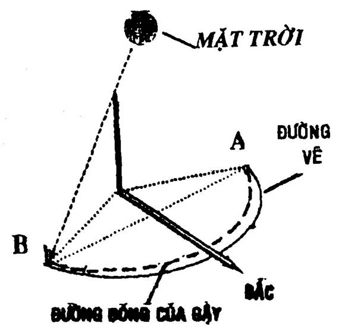
- Vẽ một cung của vòng tròn từ điểm A với tâm của gốc cây gậy.
- Giữa trưa, bóng gậy sẽ ngắn lại, nhưng quá trưa, bóng gậy sẽ chạm lại vòng tròn, ta đánh dấu điểm đó gọi là điểm B.
- Chia đường AB ra làm hai phần đều nhau. Kẻ đường thẳng từ chân gậy đi qua giữa đoạn AB, sẽ cho ta hướng Bắc.
4. Bằng sao.
Ban đêm các bạn có thể dùng sao để định hướng. Có nhiều sao và chòm sao để tìm phương hướng, nhưng dễ nhất là những chòm sao sau đây:
a) Sao Bắc Đẩu:
Muốn tìm sao Bắc Đẩu, trước hết, các bạn hãy tìm cho được chòm Đại Hùng Tinh.
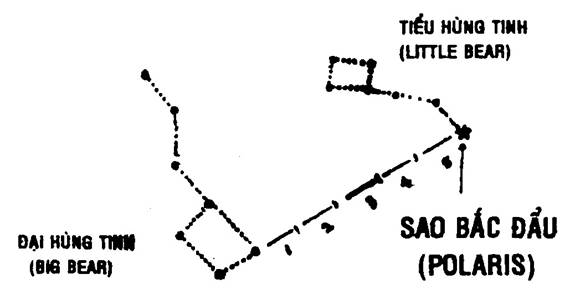
Chòm Đại Hùng tinh giống như cái muỗng lớn, gồm 7 ngôi sao, các bạn lấy 2 ngôi sao đầu của cái muỗng, kéo dài một đoạn thẳng tưởng tưởng bằng 5 lần khoảng cách của 2 ngôi sao đó, các bạn sẽ gặp một ngôi sao sáng lấp lánh, dễ nhận thấy, đó là sao Bắc Đẩu.
Cũng có thể tìm thấy sao Bắc Đẩu từ chòm Tiểu Hùng tinh. Chòm nầy cũng có 7 ngôi sao, nhưng nhỏ hơn Đại Hùng tinh. Ngôi sao chót của cái đuôi Tiểu Hùng tinh là sao Bắc Đẩu.
b) Sao Liệp Hộ (Orion)
Còn gọi là sao Cày, sao Ba, Thần Săn, Chiến Sĩ ….
Chòm Liệp Hộ có hình dáng một người mang kiếm ngang thắt lưng (thắt lưng là 3 ngôi sao sáng xếp thành hàng ngang, còn 3 ngôi sao hơi mờ là thanh kiếm).
Nếu các bạn vạch một đường thẳng tưởng tượng từ thanh kiếm đi qua ngôi sao Capella (sao Thiên Dương) là hướng tới Bắc Cực.
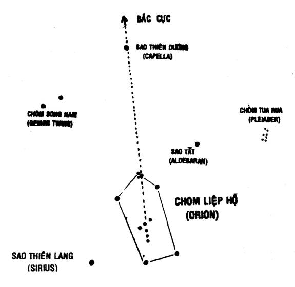
Chòm sao nầy rất dễ nhận diện dưới bầu trời Việt Nam từ chập tối tháng 11 năm nầy cho đến tháng 5 năm sau.
c) Chòm Nam Thập (Thánh Giá).
Còn gọi là Nam Tào, Thập Tự Phương Nam. Gồm 4 ngôi sao xếp thành hình chữ Tậhp. Sao Tam Thập ở khoảng giữa chòm sao Nhân Mã và Thiên Thuyền, là những ngôi sao sáng và rõ, cho nên chòm Nam Tậhp rất dễ nhận diện.
Ở Nam Cực, không có ngôi sao nào nằm ngay điểm Cực Nam như sao Bắc Đẩu ở Cực Bắc, cho nên người ta chỉ dựa vào những chòm sao xoay quanh điểm Cực Nam để định hướng, mà sao Nam Thập là chòm sao dễ nhận thấy nhất.
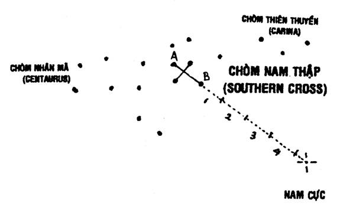
Ta gọi đường chéo dài của sao Nam Thập là đoạn AB. Các bạn kéo đoạn AB đó dài ra 4 lần rưỡi, định một điểm tưởng tượng. Điểm tưởng tượng đó cho ta hướng Nam địa dư. Ở Việt Nam, chúng ta chỉ có thể thấy sao Nam Thập từ chập tối trong khoảng tháng 5 đến tháng 7 hàng năm.
5. Bằng mặt trăng.
- Trăng Thượng Tuần: (từ mùng 1 đến mùng 10 âm lịch). Nhưng chỉ thấy rõ trăng từ mùng 4 âm lịch. Trăng khuyết, hai đầu nhọn quay về hướng đông.
- Trăng Trung Tuần: (từ 20 đến 29 – 30 âm lịch). Nhưng hết thấy rõ trăng từ 25 âm lịch. Trăng khuyết, hai đầu nhọn quay về hướng Tây.
Ngoài ra, các bạn có thể vạch một đường thẳng tưởng tượng đi qua hai đầu nhọn của mặt trăng thẳng xuống đất, điểm tiếp xúc đó là hướng Nam.
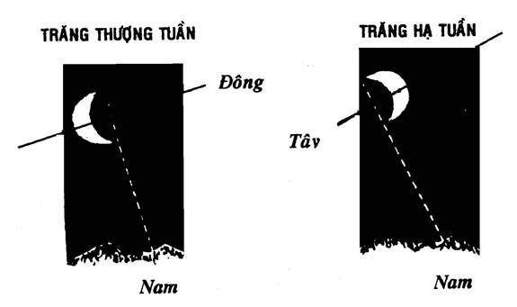
6. Bằng gió.
Việt Nam chúng ta nằm trong vùng “Châu Á gió mùa” với hai loại gió chính. Gió mùa Đông Bắc và Gió mùa Tây Nam.
- Gió mùa Đông Bắc hoạt động kéo dài từ tháng 10 năm nầy cho đến tháng 4 năm sau, thổi từ Đông Bắc đến Tây Nam.
- Gió mùa Tây Nam kéo dài từ tháng 5 đến tháng 10 hàng năm, thổi từ Tây Nam đến Đông Bắc.
Muốn biết gió thổi hướng nào, các bạn nhìn các ngọn cây, ngọn cỏ, lá cờ…
- Cầm ít cát bụi, giấy vụn… thả xuống xem gió cuốn đi hướng nào.
- Lau sạch một ngón tay, ngậm vào miệng chừng 10 giây, lấy ra đưa lên cao, nếu ngón tay lạnh phía nào là gió thổi từ phía đó.
7- Bằng rêu mốc.
Gặp thời tiết xấu, không nhìn rõ mặt trời, trăng, sao… và không có địa bàn, các bạn có thể phỏng định phương hướng bằng cách nhìn vào thân cây. Phía nào ẩm ướt nhiều là hướng Bắc (vì mặt trời không đi qua hướng nầy). Từ đó các bạn suy ra các hướng khác.
SỬ DỤNG ĐỊA BÀN.
Cách tìm phương hướng dễ dàng chính xác và nhanh chóng nhất là dùng địa bàn.
Có nhiều loại địa bàn lớn nhỏ, đơn giản, tinh vi, khác nhau, nhưng tựu trung có thể phân ra làm hai loại: Loại kim di động và loại số di động.
LOẠI KIM DI ĐỘNG.
Loại nầy có một kim từ tính di động, kim nầy xoay trên một trục và luôn luôn chỉ hướng Bắc Nam. Loại nầy cũng có hai loại.
1. Loại nắp chết, có ghi độ hoặc không ghi độ.
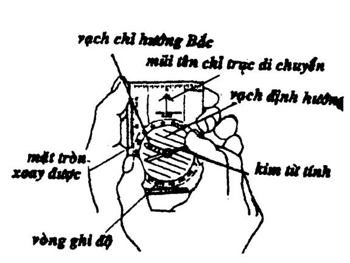
2. Loại có nắp xoay bằng tay được, trên vòng xoay đó có chia 360° có thể có khe nhắm, có mũi tên chỉ hướng cần tìm hay “trục di chuyển”.
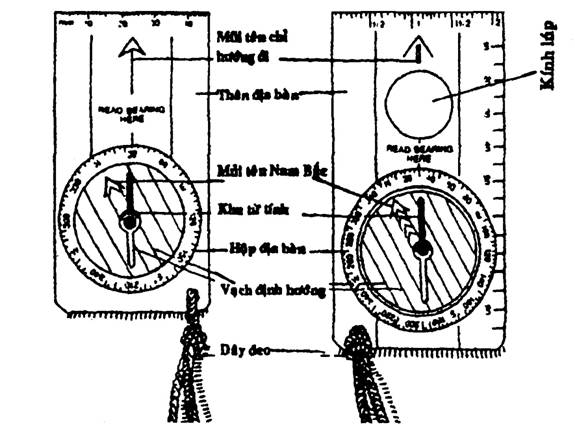
CÁCH SỬ DỤNG ĐỊA BÀN CÓ KIM DI ĐỘNG
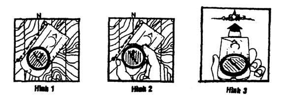
Phương pháp sử dụng địa bàn kết hợp với bản đồ
- Định vị bản đồ
- Đặt địa bàn theo lộ trình di chuyển trên bản đồ (H1)
- Xoay mặt tròn địa bàn sao cho chữ N nằm ngay đầu đỏ của kim từ tính (H2).
- Cầm địa bàn trên tay, xoay người và cả địa bàn làm sao cho đầu đỏ của kim từ tính nằm ngay chữ N (North = Bắc)
- Giữa nguyên vị trí, nhắm theo mũi tên chỉ hướng di chuyển để xác định mục tiêu sẽ đến (H3).
Tìm một hướng đã biết số độ.
- Cầm địa bàn thăng bằng trên bàn tay, đưa trước mặt.
- Vặn số độ đã biết nằm ngay mũi tên làm “trục di chuyển”.
- Xoay người sao cho đầu kim màu đỏ nằm ngay chữ N (Bắc), tức là song song với những vạch định hướng.
- Nhìn theo hướng “trục di chuyển” để tìm mục tiêu.
Xác định số độ của hướng.
- Cầm địa bàn thăng bằng trên tay đưa trước mặt.
- Xoay trục di chuyển về hướng cần xác định.
- Vặn nắp địa bàn sao cho chữ N nằm ngay trên đầu đỏ của kim di động từ tính.
- Ghi nhận số độ hiện ra ngay trên “trục di chuyển”.
LOẠI ĐỊA BÀN MẶT TRÒN DI ĐỘNG
Tiêu biểu cho loại nầy là “địa bàn quân sự”. Là một dụng cụ rất tinh vi, chính xác và dễ sử dụng. Gồm có những thành phần sau đây:
1. Khoen đồng: Dùng để luồn ngón cái, giữ địa bàn khi nhắm hướng và khoá nắp địa bàn.
2. Nắp địa bàn: Có một khe hình chữ nhật, giữa có một sợi dây nhỏ gọi là “chỉ nhắm hướng”, để nhắm ban ngày. Hai đầu chỉ nhắm hướng có hai chấm lân tinh dùng để nhắm ban đêm. Nắp được gắn với thân địa bàn bằng một bản lề.
3. Mặt địa bàn: Gồm có hai mặt kính –
- Mặt thứ nhất: xoay tròn được, và có 120 nấc (mỗi nấc bằng 3 độ). Trên mặt kính có một vạch và một chấm lân tinh hợp với nhau thành một góc 45 độ, góc là trục của địa bàn.
- Mặt thứ hai: Cố định, có một vạch đen chuẩn hướng về nắp địa bàn.
4. Mặt kính khắc số di động: Được gắn vào một thanh nam châm và xoay quanh một trục. Trên đó, có hai mặt số.
- Vòng ngoài: Màu đen, chỉ ly giác. Có 6400 ly giác.
- Vòng tròn: Màu đỏ, chỉ độ. Có 360 độ.
Trên mặt kính di động nầy có những chữ E (East = Đông), W (West = Tây). Và một tam giác lân tinh chỉ về hướng Bắc hay 6400 ly giác hoặc 360 độ.
5. Bộ phận nhắm: Gồm có khe nhắm và kính phóng đại.
6. Thước đo: Nằm ngoài cạnh trái của địa bàn khi mở ra, sử dụng cho những bản đồ có tỷ là 1/2500.
Loại mặt tròn di động
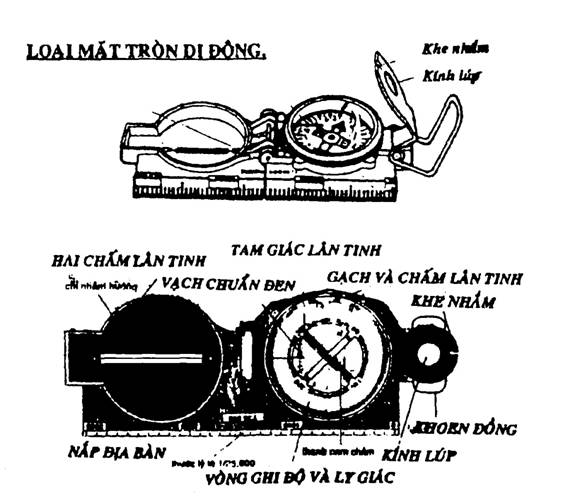
Cách sử dụng địa bàn quân sự.
- Mở và ấn khoen đồng xuống phía dưới.
- Mở nắp và bẻ thẳng góc với mặt địa bàn.
- Mở bộ phận ngắm xiên 45 độ so với mặt địa bàn.
- Luồn ngón cái tay phải qua khoen đồng.
- Ngón tay trỏ phải ôm quanh thân địa bàn, ba ngón còn lại đỡ thân địa bàn.
- Tay trái ôm và nâng bàn tay phải, hai cùi chỏ ngang vai.
- Đưa địa bàn sát vào mắt, lấy đường ngắm.
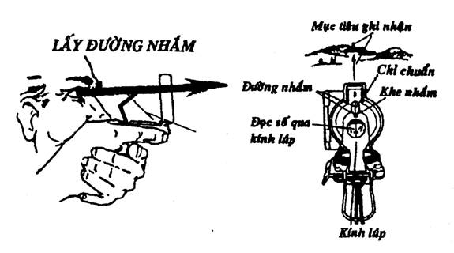
Muốn tìm số độ hay ly giác của một hướng.
Đưa địa bàn lên nhắm một đường thẳng tưởng tượng xuất phát từ khe nhắm qua chỉ nhắm và hướng thẳng đến mục tiêu. Liếc mắt nhìn qua kính phóng đại và đọc số độ hay ly giác nằm dưới vạch chuẩn đen.
Muốn tìm hướng tương ứng với số độ hay ly giác đã biết.
Các bạn chỉnh địa bàn theo số độ hoặc ly giác đã được cho, làm sao cho số độ hoặc ly giác đó nằm dưới vạch chuẩn đen. Giữ như thế rồi đưa lên mắt, vừa lấy đường ngắm vừa kiểm tra số độ và ly giác.
Kéo một đường thẳng tưởng tượng từ khe nhắm qua chỉ nhắm xem có vật gì để làm mục tiêu hay không. Nếu có, các bạn ghi nhận điểm móc đó. Nếu không có hoặc quá xa, khó xác định, các bạn tìm những mục tiêu phụ gần đó.
Ngoài việc tìm phương hướng, địa bàn còn có nhiều công dụng khác như:
- Thay thế thước đo góc.
- Định hướng bản đồ.
- Đo độ cách giác giữa hai điểm ngoài địa thế và trên bản đồ.
- Kẻ phương giác ô vuông trên bản đồ.
- Bẻ góc khi di chuyển.
- Đi theo một hướng ban ngày.
- Đi theo một hướng ban đêm.
- Làm mật hiệu…
- ………………
THIẾT BỊ ĐỊNH VỊ TOÀN CẦU GPS (GLOBAL POSITIONING SYSTEMS)
Ngày nay, người ta đã tung ra thị trường các loại thiết bị định vị toàn cầu bằng tinh thể lỏng rất gọn, nhẹ. Giúp cho các nhà thám hiểm, phiêu lưu, khai phá, du lịch… biết được vị trí chính xác của mình trên hành tinh nầy qua vệ tinh. Nếu có thiết bị nầy, chúng ta khó mà bị thất lạc, dù trong rừng rậm, giữa đại dương hay trên sa mạc.
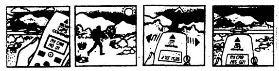
Sử dụng thiết bị SILVA GPS COMPASS
Trước khi rời khỏi nơi đậu xe, bạn bấm vào thiết bị, ghi nhớ chỗ đậu xe là “MY CAR”. Sau đó, các bạn cứ việc lên đường. Vào chiều tối, khi các bạn dừng chân cắm trại, hãy nhập vào bộ nhớ của GPS vị trí đất trại là “LOCATION 1”. Ngày hôm sau, các bạn rời đất trại và tiếp tục chuyến dã ngoại. Buổi chiều, các bạn muốn quay về lại đất trại – các bạn bấm hiển thị lên màn hình “LOCATION 1” và xê dịch thiết bị cho đến khi màn hình hiển thị hướng đi về “Vị Trí 1”. Cứ đi theo hướng đó, các bạn sẽ về đất trại. Ngày kế tiếp, các bạn muốn quay về xe của mình, các bạn bấm “MY CAR”. GPS sẽ hướng dẫn các bạn phương giác đi thẳng về xe của mình.
Thiết bị SILVA GPS COMPASS có thể ghi nhớ 79 vị trí. Ngoài ra, thiết bị còn sử dụng cho nhiều chức năng khác.
GIỮ HƯỚNG ĐI
Sau khi đã nhận được hướng mà chúng ta cần phải di chuyển, thì các bạn phải biết cách giữ đúng hướng đi để khỏi bị lệch.
Khi không có địa bàn
Nếu không biết phương pháp thì cứ mỗi một đoạn, các bạn lại phải mất công leo lên cao để kiểm tra lại, nếu không thì sẽ bị lạc. Vì vậy, các bạn cần tìm một vật chuẩn hay một hướng chuẩn để đi đến.
- Nếu vật chuẩn to lớn hay dễ nhìn thấy (như đỉnh núi, cây to giữa khoảng trống…) thì khá dễ dàng, các bạn chỉ cần nhắm vào đó mà đi tới.
- So sánh góc của hướng gió với hướng di chuyển, giữ làm sao để không bị lệch (lưu ý khi trời trở gió)
- Nếu là ban đêm, cố gắng tìm cho được sao Bắc Đẩu hay sao Nam Tào để làm điểm chủân, và luôn luôn giữ đúng góc giữa điểm chuẩn và hướng di chuyển.
- Nếu ở trong rừng, các bạn nhắm một đường thẳng tưởng tượng xuyên qua một số vật chuẩn dễ nhận thấy (gốc cây, gộp đá, gò mối…). Chúng ta tạm gọi vật chuẩn gần chúng ta nhất là điểm 1, tiếp theo là điểm 2… chúng ta đi thẳng tới điểm 1, và từ điểm 1 chúng ta nhắm một đường thẳng tiếp theo đi qua điểm 2, (bây giờ nó là điểm 1) đến một vật chuẩn khác… và cứ tiếp tục như thế, chúng ta giữ được hướng đi.
Khi có địa bàn
Nếu đã biết được hướng cần phải đi, các bạn dùng địa bàn để gióng hướng và lựa một điểm chuẩn nào dễ nhận thấy nhất trên hướng đi để làm đích đến. Sau khi tới nơi, các bạn lại dùng địa bàn để nhắm một điểm tiếp theo. Làm như thế, cho dù chúng ta có đi vòng vèo để tránh chướng ngại trong rừng, thì chúng ta vẫn giữ đúng hướng đi.
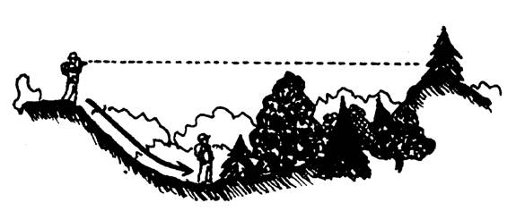
BẺ GÓC TRONG KHI DI CHUYỂN
Trên đường di chuyển theo hướng đã định sẵn, nếu gặp những chướng ngại vật lớn (đầm lầy, ngọn đồi, khúc quanh con sông…) mà các bạn không thể hay không muốn vượt qua, mà vẫn giữ đúng hướng đi, các bạn có thể dùng phương pháp bẻ góc và đếm bước để giữ hướng đi. Khi bẻ góc, tuỳ theo chướng ngại, các bạn có thể bẻ góc vuông hay bẻ góc tam giác vuông cân, và phải đếm bước để tính khoảng cách.
Bẻ góc vuông
Quy luật:
- Muốn rẽ phải một góc vuông, lấy trị số hướng đang đi cộng với 90°. Nếu trị số hướng đi lớn hơn 270° thì trừ đi 270°.
- Muốn rẽ trái một góc vuơng, lấy trị số hướng đang đi trừ với 90°. Nếu trị số hướng đi nhỏ hơn 90° thì cộng với 270°.
Thí dụ:
Chúng ta đang đi về hướng 30° thì gặp một ngọn đồi:
- Lần thứ nhất, chúng ta rẽ phải một góc vuông: 30° + 90° = 120°. Di chuyển theo hướng mới nầy (120°), chúng ta đếm được 900 bước đôi (ta gọi đoạn nầy là AB).
- Lần thứ hai, chúng ta rẽ trái một góc vuông: Áp dụng theo quy tắc, ta có hướng đang đi là 120° - 90° = 30°. Di chuyển theo hướng nầy cho đến khi qua khỏi chướng ngại vật (ta gọi đoạn nầy là BC).
- Lần thứ ba, chúng ta rẽ trái một góc vuông: Áp dụng quy tắc ta co hướng đang đi là 30° (nhỏ hơn 90°) như vậy: 30° + 270° = 300°. Di chuyển theo hướng nầy, chúng ta đếm trả lại 900 bước đôi, (ta gọi đoạn nầy là CD. Như thế AB = CD).
- Lần thứ tư, chúng ta rẽ phải một góc vuông: Áp dụng quy tắc ta có hướng đang đi là 300° (lớn hơn 270°) như vậy: 300° - 270° = 30°. Như vậy là chúng ta đã trở lại hướng đi ban đầu.
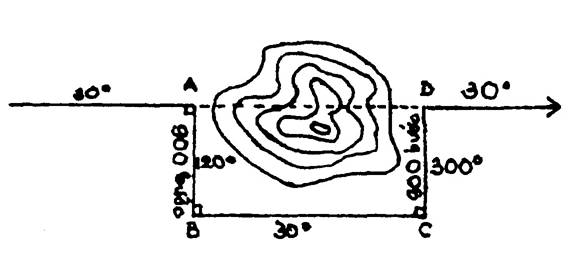
Rẽ góc tam giác vuông cân
Người ta thường sử dụng công thức: rẽ góc lần đầu 45°, góc lần thứ hai 90°, và trở lại hướng ban đầu.
Quy tắc rẽ 45°:
- Rẽ trái: Lấy trị số hướng đi trừ cho 45°. Nếu trị số hướng đi nhỏ hơn 45° thì cộng với 315°.
- Rẽ phải: Lấy trị số hướng đi cộng cho 45°. Nếu trị số lớn hơn 315° thì trừ với 315°.
Thí dụ:
Chúng ta đang đi về hướng 90°, thì gặp một cái hồ.
- Lần thứ nhất: rẽ trái 45°. Ta có: 90° - 45° = 45°. Chúng ta đếm bước và đi theo hướng nầy cho đến khi qua khỏi chướng ngại.
- Lần thứ hai: rẽ phải 90°. Ta có 45° + 90° = 135°. Chúng ta đếm bước trả lại bằng số bước mà chúng ta đã rẽ lần thứ nhất.
- Lần thứ ba chúng ta tự động quay về hướng cũ = 90°.
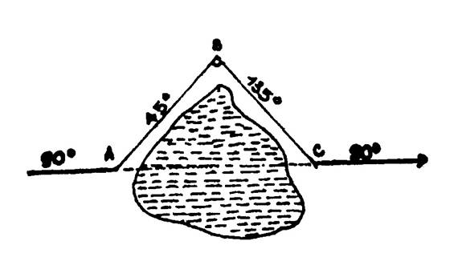
PHƯƠNG GIÁC THOÁI
Phương giác thoái (hay phương giác nghịch) là phương giác ngược chiều với phương giác tiến. Nói một cách khác là hai phương giác trên cách nhau một nửa vòng tròn (tức 3200 ly giác hay 180°). Do đó, chúng ta có hệ thức sau:
- Phương giác tiến + 3200 ly giác = phương giác thoái
- Phương giác tiến + 180° = phương giác thoái
Lưu ý:
- Nếu phương giác tiến nhỏ hơn 3200 ly giác hay 180°, thì chúng ta cộng thêm 3200 ly giác hay 180°.
- Nếu phương giác tiến lớn hơn 3200 ly giác hay 180°, thì chúng ta trừ đi 3200 ly giác hay 180°.
Thí dụ:
- Phương giác tiến là 4600 ly giác.
- Phương giác thoái sẽ là: 4600 – 3200 = 1400 ly giác
- Phương giác tiến là 80°
- Phương giác thoái sẽ là: 80° + 180°= 260°.